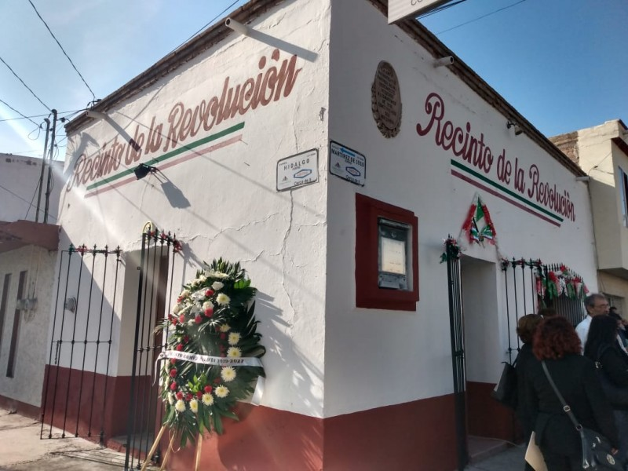
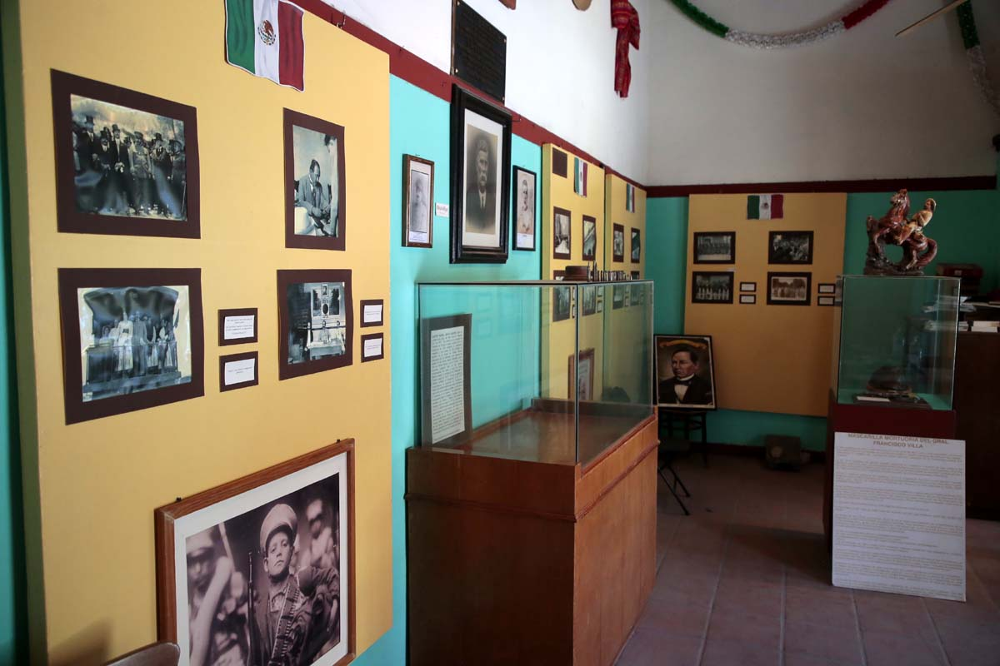
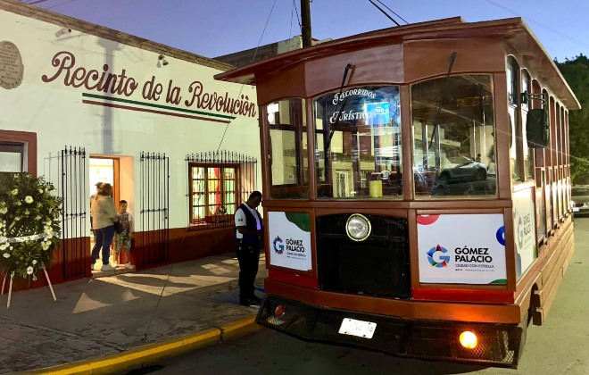

Recinto de la Revolución Gomez Palacio
El Recinto de la Revolución en Gómez Palacio, Durango, es un lugar emblemático que resguarda una importante parte de la historia revolucionaria de México.
Este espacio, ubicado en la avenida Hidalgo y la calle Mártires, tiene un valor histórico significativo por haber sido sede de reuniones estratégicas durante el inicio de la Revolución Mexicana, específicamente relacionadas con el movimiento antirreeleccionista del Plan de San Luis, liderado por Francisco I. Madero.
Datos historicos
El recinto fue testigo de los preparativos de la sublevación encabezada por Jesús Agustín Castro, un líder revolucionario que, con menos de cien hombres, logró tomar Gómez Palacio y otras localidades cercanas como Lerdo, Torreón y Mapimí en 1910. Posteriormente, Castro se convirtió en un destacado político, llegando a ser gobernador de Durango bajo la Constitución de 1917. Su vida y aportes son uno de los temas destacados en las exhibiciones del lugar.
Hoy en día, el recinto funciona como un museo de sitio que periódicamente organiza exposiciones fotográficas, charlas y exhibiciones de artículos personales de personajes históricos, destacando la vida y obra de Jesús Agustín Castro. Estas actividades buscan preservar la memoria de la Revolución y mostrar su impacto en la región. También se realizan recorridos educativos que resaltan la importancia de Gómez Palacio durante este periodo histórico
Curiosidades
Tras la Revolución, el edificio tuvo varios usos, incluyendo ser una iglesia protestante, hasta que fue restaurado y acondicionado como recinto histórico en 1995. El espacio está a cargo de expertos locales que comparten con los visitantes historias desconocidas sobre los eventos revolucionarios y sus protagonistas, haciendo del lugar una experiencia enriquecedora
El Recinto de la Revolución es un lugar clave para los amantes de la historia y para quienes deseen comprender mejor el papel de Gómez Palacio en uno de los movimientos más significativos de México. Con su atmósfera auténtica y su riqueza histórica, este sitio se convierte en un atractivo cultural imperdible en la región.